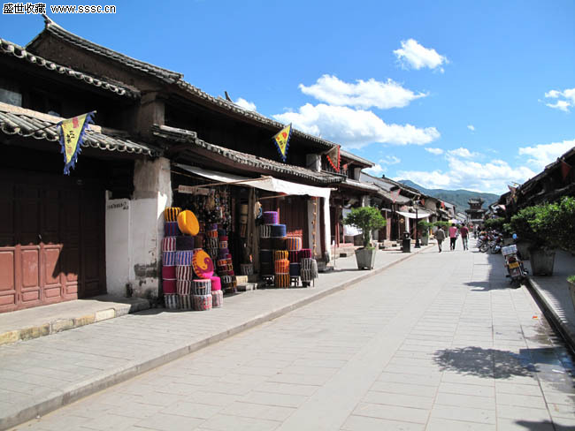
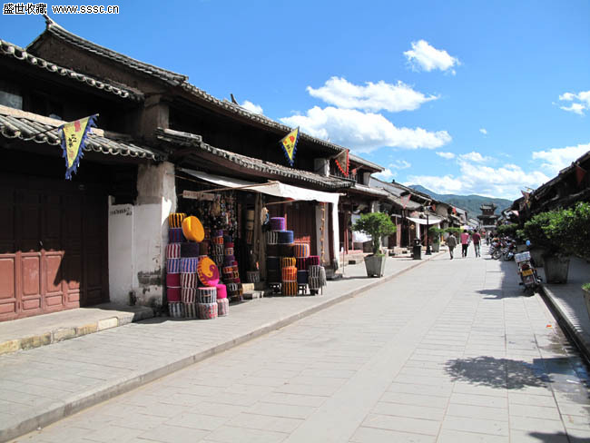

民族风情
巍山的民族风情也独具特色。彝族打歌，舞姿粗犷豪迈，热情奔放，在火把节那天，来自四面八方的人都聚在一起，围着火堆打歌的情形最为热闹。巍山彝族打歌队曾到北京参加会演，还曾到日本献艺。巍山民间的“洞经音乐”，也受到好评。 巍山的扎染具有民族传统工艺特色，曾被文化部命名为“中国扎染艺术之乡――巍山”。巍山扎染出口日本、欧美、东南亚等国。巍山的蜜饯、果脯，是远近驰名的土特产。名特小吃“粑肉饵丝”，不油不腻，清香可口。游人到此，总要品尝一番。
巍山的民族风情也独具特色。彝族打歌，舞姿粗犷豪迈，热情奔放，在火把节那天，来自四面八方的人都聚在一起，围着火堆打歌的情形最为热闹。巍山彝族打歌队曾到北京参加会演，还曾到日本献艺。巍山民间的“洞经音乐”，也受到好评。 巍山的扎染具有民族传统工艺特色，曾被文化部命名为“中国扎染艺术之乡――巍山”。巍山扎染出口日本、欧美、东南亚等国。巍山的蜜饯、果脯，是远近驰名的土特产。名特小吃“粑肉饵丝”，不油不腻，清香可口。游人到此，总要品尝一番。